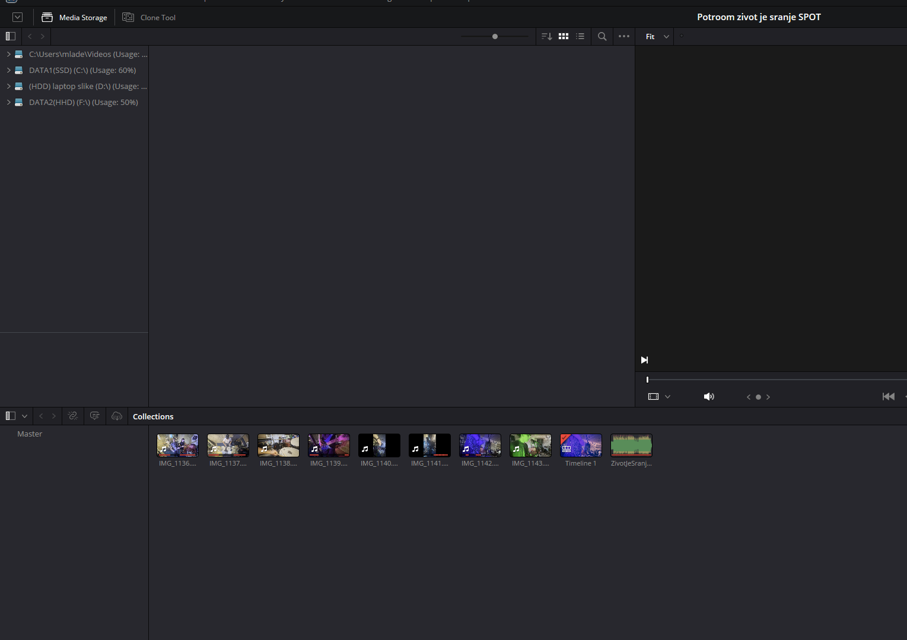
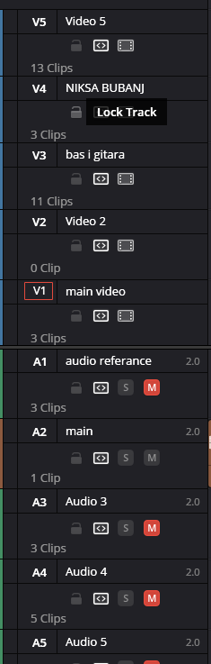
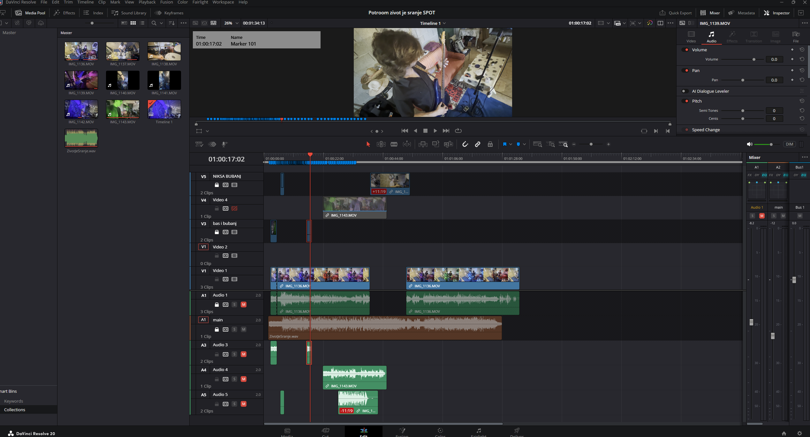
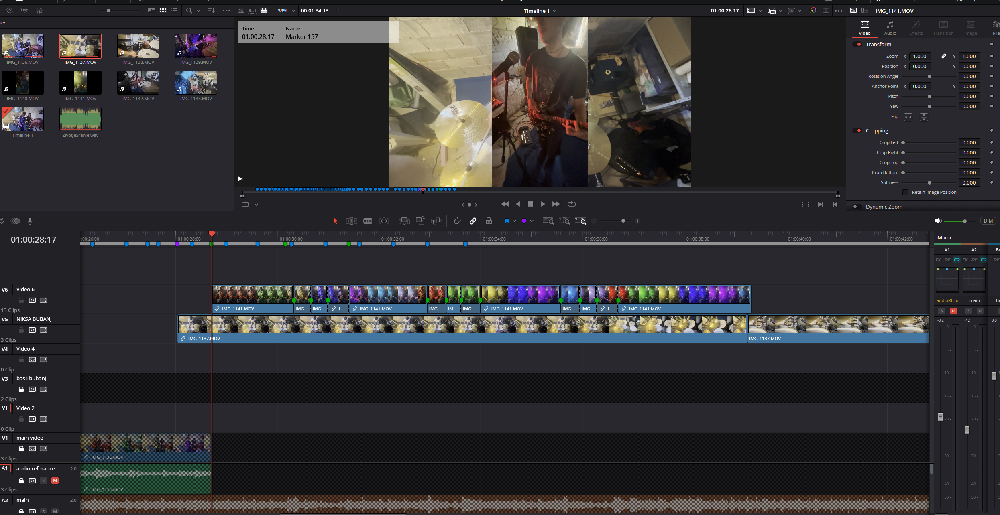
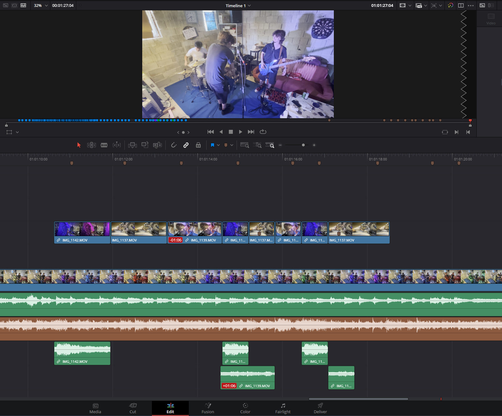
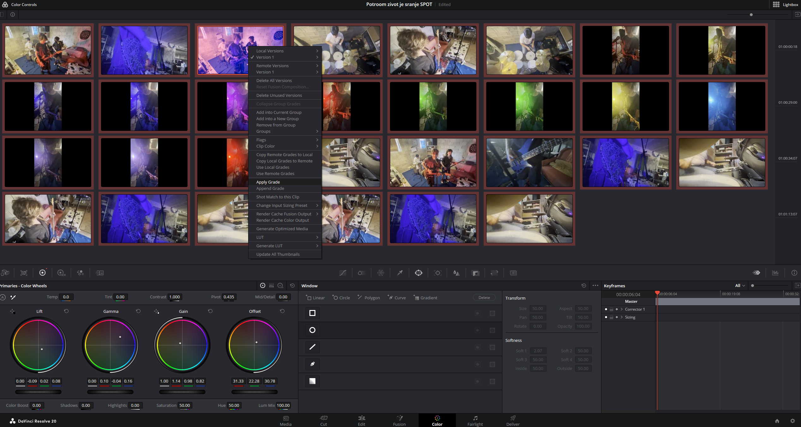
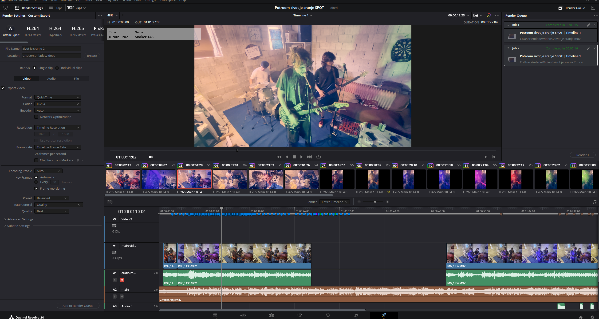

Potroom vIDeo spot
Proces izrade video edita

vIDeo edIt - korak po korak
Kratki spoj
Odje mozete vidjeti gotov video edit.

1. Media
Prva faza je sakupljanje svih materijala: snimki, audio zapisa, reference i elemenata koje želimo koristiti u videu.
2. Imenovanje
Svaki fajl dobiva svoju traku i jasno ime kako bi se kasnije lakše pronašao i organizirao u projektu.


3. Postupak
Ovdje sam oceo dodavati sve scene i razvijati neki tok videa.
4. Switch
Na brakedown-u pijesme sam odlucio da bi najvise pasalo da u ritmu pijesme gitaris mjenja scene dok je u pozadini bubnjar.
Kako bi to naoravalo snimili smo gitarista kako svira taj dio pjesme te nakon toga sam izrezao taj video u ritmu pjesme te sam te isjecke pomicao po X osi lijevo ili desno kako bi dobio idealan efekt.


5. Kraj pjesme
Za kraj sam odlucio da bi bilo zanimljivo da se izmjenjuju scene u kojima sviramo. To sam napravio tako da sam stavljao markere u ritmu kako bi lakse znao gdje da stavim svaku scenu. Ovaj dio nije bio težak za napravit jer sam samo trebao isjeci video na određenu duljinu te kopirat ih par puta.
6. Odabir boja
Nakon sta sam zavrsio sa editanjem videa, slijedilo je odabiranje odgovarajućih boja i kontrasta kako bi se postigao željeni vizualni efekt.


7. Namještavanje boje
Nakon stasam odabrao bojekoje bi pasale za ovaj spot oznacio sam sve video koje sam koristio i kliknuo "Apply Grade" sto kao i sta pise doda boju na sve scene koje sam označio.
8. Export
Posljednji korak je export finalne verzije videa, spremne za dijeljenje i objavu.

Život je sranje
Najpoznatija pjesma Život je sranje spremna je za slušanje.